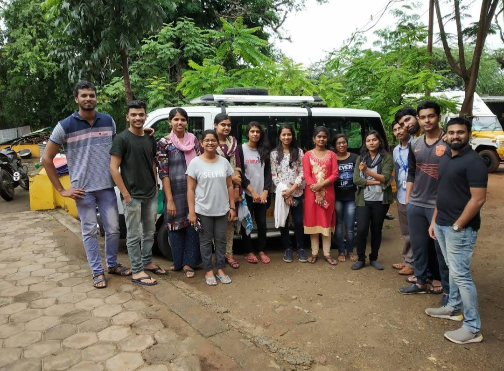

HUMANE ANIMAL SOCIETY
CONTACT
REGISTERED OFFICE
Correspondence on paper should be mailed to the HAS's Registered Office.
You may also visit with prior appointment. For phone or email
correspondence,please use one of the methods mentioned below.
Humane Animal Society (Registered office)
35 Co-operative Colony
Perks Arch Road
Uppilipalayam
Coimbatore 641015 TN
ABC AND RESCUE CENTRE
The ABC and Rescue Centre is where we carry out sterilisations,
emergency treatments and operations, and it where animals
that aren't ready to move to the Sanctuary or be released are
sheltered. You may visit with prior appointment.
Humane Animal Society (Registered office)
35 Co-operative Colony
Perks Arch Road
Uppilipalayam
Coimbatore 641015 TN
SANCTUARY
The Sanctuary is where animals waiting for adoption live, but it also
the home of the animals that are deemed non-adoptable, usually due to
missing limbs or paralysis. Please make an appointment before you visit.
Humane Animal Society (Sanctuary)
35 Co-operative Colony
Perks Arch Road
Uppilipalayam
Coimbatore 641015 TN